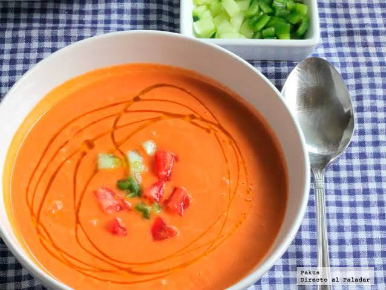
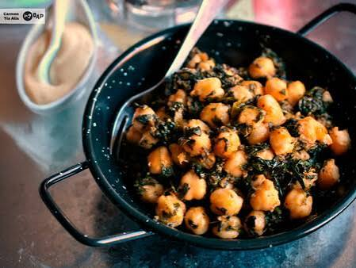
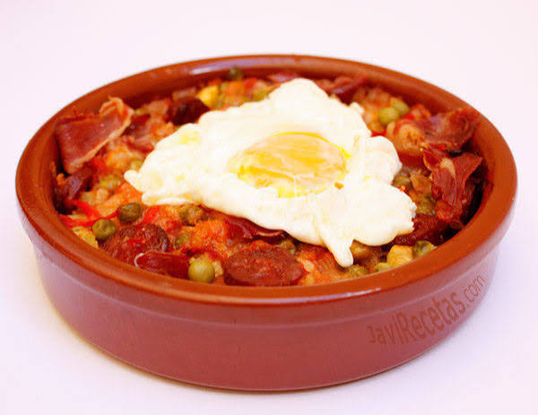

La cocina sevillana es un reflejo de su clima, su historia y su carácter mediterráneo. Estos son tres de sus platos más representativos.
Gazpacho Andaluz Sopa fría a base de tomate, pepino, pimiento, ajo, aceite de oliva virgen extra y vinagre. Ideal para combatir el calor del verano sevillano. Ingredientes principales:
|
Espinacas con Garbanzos Plato de origen morisco, muy nutritivo y sabroso, elaborado con espinacas, garbanzos cocidos, comino, pimentón y pan frito. Típico de los bares de tapas sevillanos. Ingredientes principales:
|
Huevos a la Flamenca Plato servido en cazuela de barro, con huevos escalfados sobre una base de verduras y jamón. Un clásico de las tabernas tradicionales. Ingredientes principales:
|